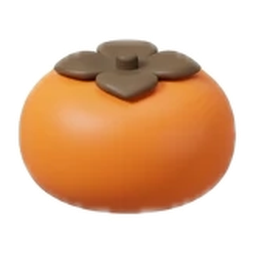
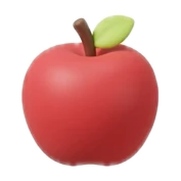

같은 작물끼리 합쳐요

+→
로 옮기고
Space로 떨어뜨려요. (↓ 키도 돼요)
길게 누르면 점점 빨리 움직여요.
같은 작물 둘이 닿으면
다음 단계로 자라요.
- 씨앗 → 새싹 → 콩 → 딸기 → 감
- → 사과 → 배 → 참외 → 수박 → 황금 이삭
왼쪽 위 NEXT 칸에서 다음 작물을 미리 볼 수 있어요.
장애물을 치워요
가끔
빨간 ▼ 경고 뒤에 장애물이 떨어져요. 장애물은 작물과 합쳐지지 않고,
바로 옆에서 작물을 합치면 치워져요.
- 돌: 옆에서 2번 합치면 깨져요
- 벌레 (스테이지 2부터): 1번이면 퇴치. 하지만 벌레끼리 만나면 큰 벌레가 돼서 2번 합쳐야 해요
- 가시 덩굴 (스테이지 3부터): 점점 커져요. 옆에서 1번 합치면 걷어내요